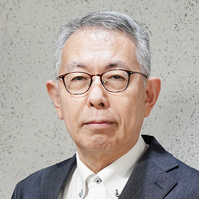
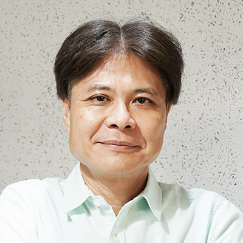
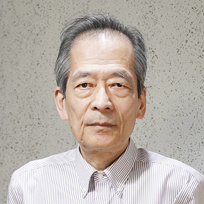
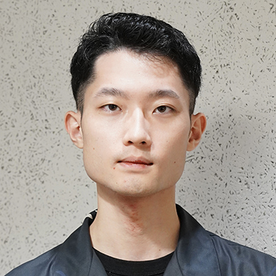
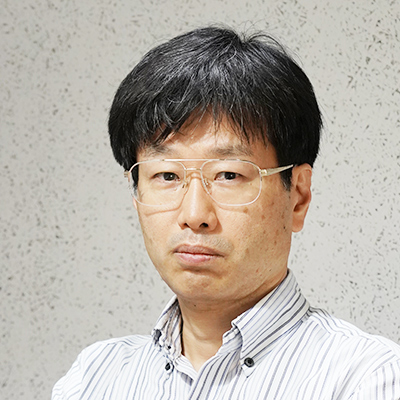
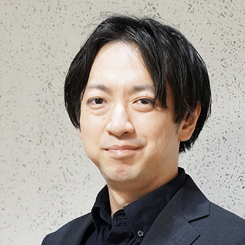
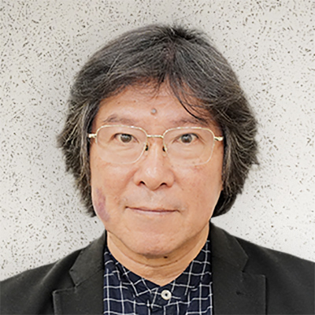
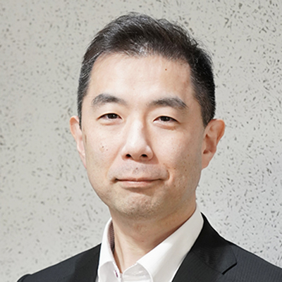
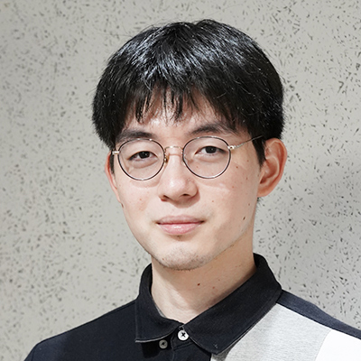

Members
- HOME
- Members
ROIS
-

- PI&MW&POC
- Director, Project Professor
- Yutaka Ishikawa
-

- HW
- Vice Director, Professor
- Masahiro Goshima
-

- MW&PoC
- Vice Director, Professor
- Atsuko Takefusa
-

- Th
- Vice Director, Associate Professor
- Taro Sekiyama
-

- IC (OS)
- Vice Director, Visiting Professor
- Kenji Kono
-

- Th
- Project Professor
- Atsushi Ohori
-

- HW
- Researcher
- Satsuya Ohata
ROIS RA
-

- HW
- Research Assistant
- Kazuhide Uchiyama
-
- HW
- Research Assistant
- Wakuto Matsumi
-

- MW
- Research Assistant
- Reina Sasaki
-

- MW
- Research Assistant
- Haruka Kita
Visiting
-

- IS (HW)
- Visiting Professor
- Jun Furukawa
-

- IS (HW)
- Visiting Associate Professor
- Shinya Takamaeda
-
- IS (HW)
- Visiting Associate Professor
- Ryota Shioya
-

- IS (HW)
- Visiting Professor
- Keiji Kimura
-
- IS (OS)
- Visiting Professor
- Kenichi Kourai
-
- IS (ATT)
- Visiting Professor
- Kuniyasu Suzaki
-

- MW&PoC
- Visiting Professor
- Hironori Nakajo
-

- IS (MW)
- Visiting Lecturer
- Shinichi Miyazawa
-

- OS&MW
- Visiting Professor
- Atsushi Mitsuzawa
-

- MW
- Visiting Professor
- Masato Oguchi
-

- Th
- Visiting Professor
- Naoki Kobayashi
-

- OS
- Visiting Research Assistant
- Terufumi Hata
-

- MW&PoC
- Visiting Research Assistant
- Shogo Takata
-

- MW&PoC
- Visiting Research Assistant
- Koichi Hashimoto
| HW | Hardware |
|---|---|
| OS | System Software |
| TH | Theory |
| ATT | Attestation |
| MW | Middleware |
| PoC | Proof of Concept |
| IC | International collaboration |
| IS | International standardization activities |
(As of Oct. 1, 2025)